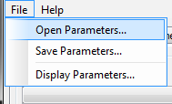
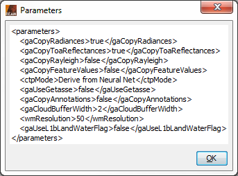

| IdePix |
|
Selecting the IDEPIX Generic classification of pixels... entry from the VISAT tool menu opens another sub-menu with the two entries 'Water...' and 'Land...'. Selecting 'Land' from this sub-menu pops up the 'IDEPIX Pixel Identification Tool - Land' dialog:
L1b product: Here the user specifies the MERIS or SPOT-VGT L1b source product. The combo box presents a list of all products open in VISAT. The user may select one of these or, by clicking on the button next to the combo box, choose a product from the file system.
Name: Used to specify the name of the target product.
Save to: Used to specify whether the target product should be saved to the file system. The combo box presents a list of file formats, currently BEAM-DIMAP, GeoTIFF, and HDF5.
Open in VISAT: Used to specify whether the target product should be opened in VISAT. When the the target product is not saved, it is opened in VISAT automatically.
Selecting the Processing Parameters tab in the 'IDEPIX Pixel Identification Tool - land' dialog switches to the following view:
Write TOA radiances to the target product: This checkbox indicates if the TOA radiances shall be written to the target product.
Write TOA reflectances to the target product: This checkbox indicates if the TOA reflectances shall be written to the target product.
Write Rayleigh corrected reflectances to the target product: This checkbox indicates if the Rayleigh corrected reflectances shall be written to the target product.
Write Feature values to the target product: This checkbox indicates if the feature values for a pixel shall be written to the target product. In the land classification algorithm, a feature value (e.g. the 'brightness value') is a probabilistic quantity that the corresponding feature (e.g. 'brightness') is true or not. The probabilistic combination of features, using internal thresholds of the feature values, leads to the final classification of the pixel attributes (e.g. 'is_cloudy'). See [7] for more details.
CTP value to use in MERIS cloud shadow algorithm: This value is the CTP (cloud top pressure) in hPa to use in the MERIS cloud shadow algorithm. This can be derived from a neural net or set as a constant number.
Use GETASSE30 DEM for Barometric Pressure Computation: This checkbox indicates if the GETASSE30 DEM shall be used for Barometric Pressure Computation. If the checkbox is not selected or GETASSE is not installed, tie point altitudes will be used instead.
Write input annotation bands to the target product (VGT only): This checkbox indicates if input annotation bands shall be written to the target product (has only effect for VGT L1b products).
Width of cloud buffer (# of pixels): This value is the width of a cloud 'safety buffer' around a pixel which was classified as cloudy.
Resolution of used land-water mask in m/pixel: This value is the resolution of the used SRTM (Shuttle Radar Topography Mission, see [8]) land-water mask in m/pixel.
Use land-water flag from L1b product instead: This checkbox indicates if the land-water flag from the L1b product shall be used instead of the SRTM mask.
Selecting the File entry in the Menu Bar opens the following view:

Open Parameters...: When this entry is selected, an 'Open File' dialog will appear. Here, a BEAM GPF parameters XML file can be selected, containing IdePix land pixel classification processing parameters which were saved earlier. These parameters will be loaded and applied for an upcoming processing.
Save Parameters...: When this entry is selected, a 'Save File' dialog will appear. Here, the current set of IdePix land pixel classification parameters can be saved into a BEAM GPF parameters XML file for later re-usage.
Display Parameters...: When this entry is selected, the current set of IdePix land pixel classification parameters will be displayed in XML format (see below).

Selecting the Help entry in the Menu Bar opens the following view:

Help: When this entry is selected, this online help is opened in a separate window.
About...: When this entry is selected, an 'About' dialog for the current processor is opened (see below).

Run: When this button is clicked, the processing will be started with the selected parameters.
Close: When this button is clicked, the processor tool window will be closed.